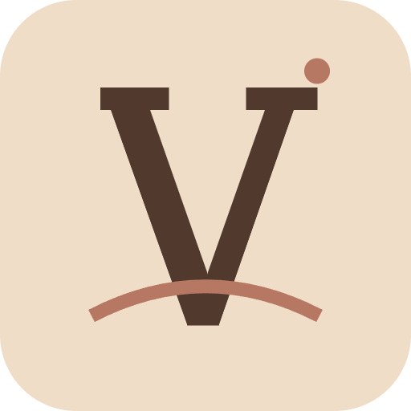

<- all projects

Velvet Feed
PC
Volume
Live
Style a studio, shoot and edit your posts, and build a creative life on your own terms.
An empty apartment, a secondhand camera and a feed that could become anything. Help Mara build a creative career while keeping room for the people and ideas she loves. Every brief is a small photo shoot: pick the look, drag props around the frame, choose a story angle and a license, then cut the edit on the beat and publish. Followers, trust, energy and friendship all count. 45 briefs across fashion, home and travel, 60 prop variants, six friends to visit, six story chapters and three career endings.